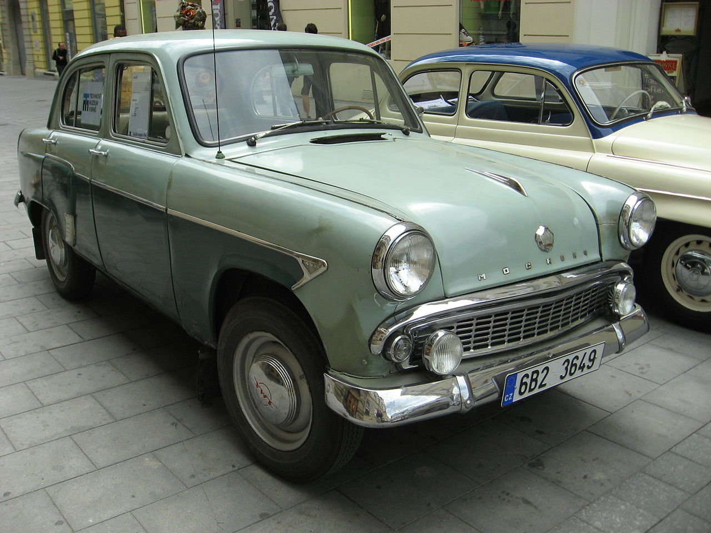

Москвич
Московский автосборочный завод имени КИМ — с 1930 по 1939 год;
Московский автомобильный завод имени КИМ — с 1939 года до Великой Отечественной войны;
Московский завод малолитражных автомобилей (ЗМА, или МЗМА) — c 1945 по 1968 год;
Автомобильный завод имени Ленинского комсомола (АЗЛК) — с 1968 до 1992 год;
>ОАО «Москвич» — с 1992 до 2010 года.
Предприятие выпускало автомобили марок «КИМ» и «Москвич». Был основан в 1930 году,
остановлен в 2002 году, ликвидирован в сентябре 2010[3]. На сгодня права на марку принадлежат VAG.
Легенды
Москвич-408 — родоначальник третьего поколения автомобилей «Москвич».
Сохранив основные габаритные размеры практически аналогичными своим предшественникам, автомобиль получил
более длинную колёсную базу и полностью новый, более низкий и элегантный кузов современной формы, с более
просторным и комфортабельным салоном, отличной обзорностью с места водителя и более рациональным
расположением пассажиров, а также 13" обода колёс, намного лучше вписывающиеся в представление
о дизайне европейской малолитражки начала шестидесятых годов. Стал немного мощнее двигатель, за счёт чего
несколько улучшились динамические качества, заметно улучшились ходовые качества — устойчивость и
управляемость. Благодаря чему автомобиль получил путевку в мир АВТОСПОРТА и стал гордостью советского экспорта.
Москвич-412 — советский и российский заднеприводный автомобиль II группы малого класса,
выпускавшийся с октября 1967 по 1975 год в Москве на заводе МЗМА, позднее переименованном в АЗЛК,
и с 1967 по апрель 1999 года на автомобильном заводе в Ижевске. Является дальнейшей модернизацией
модели «Москвич-408» и долгие годы выпускался с ней параллельно. В первые годы выпуска благодаря успеху 408
большая часть М-412 шла на экспорт. Автомобиль собирали в Болгарии (под маркой Rila) и Бельгии (под маркой Scaldia).
В продвижении на мировом рынке важную роль играла слава, завоёванная «Москвичами» в международных ралли на рубеже
шестидесятых и семидесятых годов. Чего стоила только народная ирония: Вы помните Лондон-Сидней 1968? А Порше,
Мерседес, Лотус и Альфа-Ромео помнят, ведь проиграли Москвичу. Внутри страны предлагался до середины 1990-х годов,
а ряд модификаций на его базе и до начала 2000-х.
Москвич-2140 — советский заднеприводный автомобиль III группы малого класса с кузовом типа седан,
выпускавшийся в Москве на заводе АЗЛК с 1976 по 1988 год. Представлял собой глубоко модернизированный
вариант модели «Москвич-412». 2140 хоть и был продолжателем 412-го но многие понимали что это уже
не его "отец или дед". Выезжая на славе своих предков 2140 представлял скорее более комвортабельный и
удобный седан нежели "спорт кар". Явно это заметно по объему экспорта не RALLY версии, а все же версии
1600SL. Однако он заслужи свою славу показав, что советский автопром был еще на многое способен.
Модельный ряд
Москви́ч-400 — советский автомобиль I группы малого класса, выпускавшийся на
Заводе малолитражных автомобилей в Москве («ЗМА», впоследствии — «МЗМА») с декабря 1946
по 1954 год. Первый массовый легковой автомобиль, продававшийся в СССР для индивидуального использования.
По конструкции был идентичен автомобилю Opel Kadett K38, выпускавшемуся в 1937—1940 годах в Германии
предприятием Adam Opel A.G., принадлежавшим американскому концерну General Motors. Устройство было воссоздано
после войны на основе сохранившихся экземпляров, так как оригинальная техническая документация не сохранилась.

Москви́ч-402 — советский автомобиль I группы малого класса, выпускавшийся на Московском заводе малолитражных автомобилей
(МЗМА) с 1956 по 1958 год, выпущено 87 658 экземпляров вместе с модификациями.
Москви́ч-407 — усовершенствованная версия с модернизированным верхнеклапанным двигателем и улучшенной отделкой,
выпускавшаяся с января 1958 по 1963 год, выпущено 359 980 экземпляров.
Москви́ч-403 — «переходная» модель, сочетавшая кузов и двигатель «Москвича-407» с некоторыми узлами
и агрегатами перспективного «Москвича-408» и выпускавшаяся с декабря 1962 по июль 1965 года, выпущено
105 726 экземпляров.
Москвич-2141 (экспортное наименование в странах Европы — ALEKO, (латинская калька с АЛЕКО — Автозавод Ленинского Комсомола)
— советский и российский легковой автомобиль третьей группы малого класса с кузовом типа «хэтчбэк», выпускавшийся с 1986
по 1998 годы на Автомобильном заводе имени Ленинского Комсомола (АЗЛК).В 1997 году модель получила новую лицевую часть
и комплектацию с иностранным двигателем марки «Рено», а также была переименована в «Святогор». Обозначается индексами:
«2141-02», "-45", "−00", "−22", "−23", "−24", "−25". В марте 2002 года заводской конвейер остановился, а самые последние
экземпляры, частично собранные, а некоторые в виде кузовов покинули цеха завода в 2003—2006 годы. Даже после прекращения
функционирования завода АЗЛК, производство «Москвича 2141(-02)(-45)» и пикапа на его базе из машинокомплектов продолжалось
на сторонних предприятиях до 2002—2003 года. Выпущен 716831 экземпляр.
Ну и венцом инженерной мысли специалистов АЗЛК стал Москвич-2142 "Иван Калита"-российский автомобиль представительского
класса, выпускавшийся в передне- и полноприводном вариантах на заводе ОАО «Москвич» с 1998 года вплоть до остановки
конвейера в 2001 году. Автомобиль являлся модификацией, созданной под нужды правительства Москвы. Так же, как и
укороченный Москвич-2142S0 "Дуэт" (также существовал ещё и "Дуэт-2", созданный на базе модели «Князь Владимир»),
изготавливался штучно, так как массового спроса не имел. Этими автомобилями завершается история завода Москвич.
Новая «концепция» руководства завода по переходу на выпуск автомобилей штучного производства потерпела полный крах,
так как предприятие, рассчитанное на выпуск сотен тысяч массовых автомобилей, не могло покрывать свои расходы за
счёт эпизодических продаж мелкосерийных «люксов».